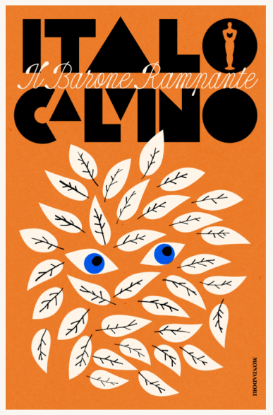
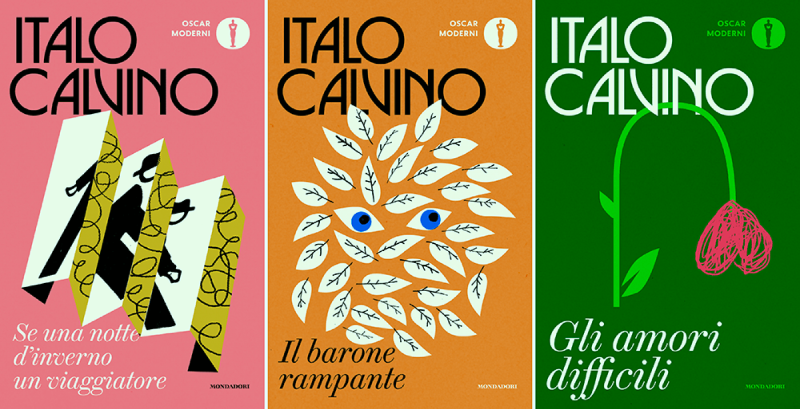

Nell’ultimo anno, in vista del centesimo anniversario della nascita di Italo Calvino, che cade il 15 ottobre, Mondadori ha ripubblicato in una nuova edizione tutti i libri del grande scrittore italiano, uno degli autori più importanti del Novecento.È stata fatta quella che nel gergo editoriale è detta "uniform edition": le nuove copertine seguono lo stesso stile grafico, pensato appositamente per le opere di Calvino
Come sono state ridisegnate le copertine di Italo Calvino


Jack Smyth
A vincere la gara è stato l’irlandese Jack Smyth, un grafico che negli ultimi anni è stato molto apprezzato nell’editoria internazionale. Oggi tutte le sue copertine sono arrivate nelle librerie. Smyth in particolare era un lettore di Calvino da anni.
Per Smyth la cosa più importante era trasmettere la voce di Calvino, più che spiegare i suoi libri.

